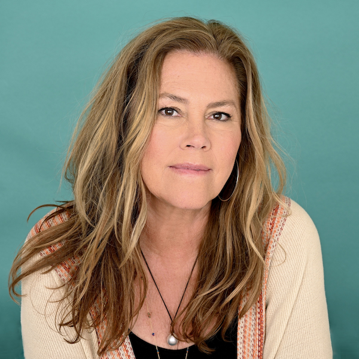
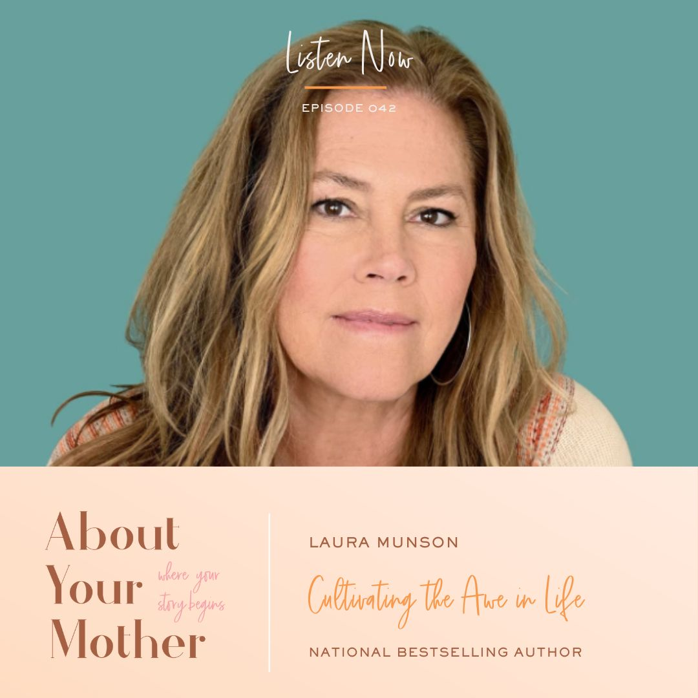

Laura Munson
Thank you for trusting me with your story. Everything you need to share our conversation is on this page: listen links, captions you can post as-is, your own words pulled from the episode, and all the artwork. Share it however feels right to you.
Laura Munson is the New York Times, USA Today, and international bestselling author of the novel Willa’s Grove (Blackstone) and the memoir This Is Not the Story You Think It Is (Amy Einhorn/Putnam). Founder of the acclaimed Haven Writing Retreats, she has been featured or published in Vanity Fair, Elle, Redbook, Time, Newsweek, The New York Times Modern Love column, The New York Times Magazine, O. Magazine, and many others. She has appeared on Good Morning America, The Early Show, WGN, NPR, London’s This Morning, Australia’s Sunrise, and other global media outlets. She lives in Whitefish, Montana.

Your episode is live
Since I was in my twenties, I've read the New York Times Sunday edition in a particular order: the style section is first, plus I read the modern love piece every time. I remember reading what Shamu taught me about marriage, and I remember reading, "Those aren't fighting words, dear." It didn't take Laura Munson weeks or even months to write them either. It was less than an hour. Why? Because she had hit the vein of truth and it just poured out of her.
Her dreams of publishing a novel first were dashed because when that piece came out, it was a memoir that she sold. She had created a firestorm with her essay. Laura is someone I have watched for years. Now that I am in the publishing world, Laura and I are one degree from each other in several directions. What I have found in this new world is there are women like Laura who guide, lift, and build other writers up. That is what she does innately.
Her new book, the Wild Why is about honoring your creativity. Creativity is Laura's core. She has written dozens of books, some that sit on the shelves collecting dust, but she is always creating. This conversation on About Your Mother touches on writing, but it is about so much more. It is about setting yourself free, finding awe, and living your truth. Here is a listen on what it means to honor what lives inside of you.
Resources Mentioned
- Gertrude Stein: "There is No There, There"
- The Craighead Brothers
- Kelly Corrigan
- Naomi Shihab Nye
- Jim Harrison
- Brooke Warner
- Brené Brown
- Miami Book Fair
- Dani Shapiro
- Maria Shriver
Connect With the Guest
- Website: https://lauramunson.com/
- Book: The Wild Why
- Writing Programs and Retreats
- Modern Love Essay
Embed codes
Paste into a website, newsletter, or Substack post.
<iframe src="https://embed.podcasts.apple.com/us/podcast/cultivating-the-awe-in-life-with-laura-munson/id1522701752?i=1000716657093" height="175" allow="autoplay *; encrypted-media *; clipboard-write" sandbox="allow-forms allow-popups allow-same-origin allow-scripts allow-top-navigation-by-user-activation"></iframe>
<iframe src="https://open.spotify.com/embed/episode/5lkA3WmXAJF944bz1MsdcX" height="152" allow="autoplay; clipboard-write; encrypted-media; fullscreen; picture-in-picture"></iframe>
Ready to share
Written in your voice so you can post as-is or make them your own. Tag @byjennifergriffith and Jen will reshare.
Captions are on their way. Check back soon.
Your words
Pulled straight from the episode, with timestamps so you can find the moment.
““Success by society’s constructs and failure are myths, and the only thing that’s real is doing the work.””
Laura Munson Behind the scenes
““Without wonder, we don’t have empathy, and without empathy, we don’t have a civilization.””
Laura Munson Behind the scenes
““I don’t believe in writer’s block. I believe in low tide.””
Laura Munson Behind the scenes
““I talk too much. I ask too many questions. I cry too easily. I laugh too loud. I’m too sensitive. I’m not sure what that means, and I feel bad about all of it.””
Laura Munson Behind the scenes
““You couldn’t set a table without hearing a story about what happened to that piece of China going back to the Civil War.””
Laura Munson Ask them now
““Go slowly, be careful, and please find some playfulness and wonder in it all. Especially when your heart is breaking.””
Laura Munson Behind the scenes
““Writing is my practice, my prayer, my meditation, my way of life, and sometimes my way to life.””
Laura Munson Behind the scenes
““Life is daily, get used to it.” (her grandmother’s saying)”
Laura Munson Ask them now
““Go slow and be in awe.” Jennifer Griffith”
Jennifer Griffith Behind the scenes
Your assets

Episode cover art
The official artwork for this episode, sized for podcast platforms and social.
Download artwork
Audio file
Full episode audio for reels, clips, or wherever you need it.
Please credit Jennifer Griffith and About Your Mother if you use the audio in clips or reels.
Download MP3More from the episode
Find Jen everywhere
About Your Mother: Where your story begins. Conversations about the influence our mothers had on the trajectory of our lives.
About Your Mother
Follow the show so you never miss an episode, and browse every conversation on the podcast page.
If anything here is off, reply to Jen's email and we'll fix it.
Leave a review on Apple Podcasts
If our conversation meant something to you, a quick review helps About Your Mother reach the people who need it most. It takes about two minutes.
Leave a review